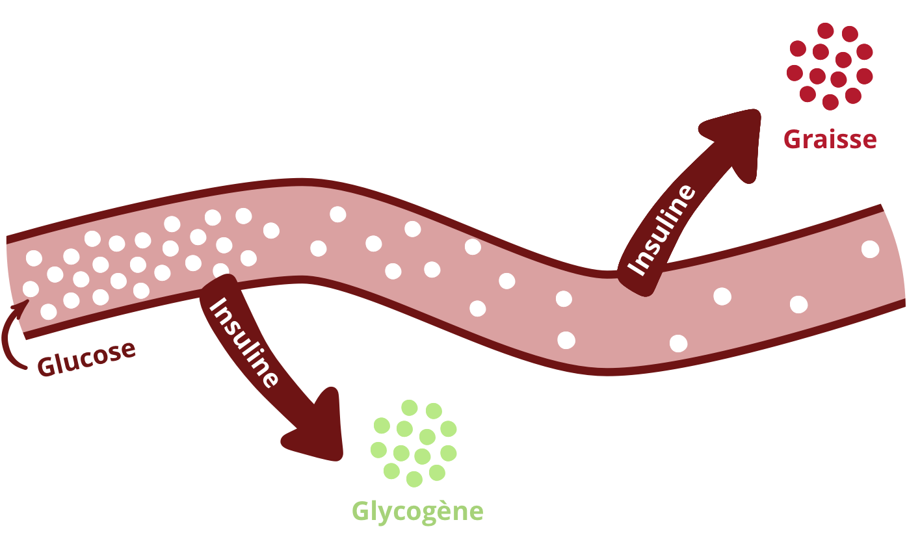
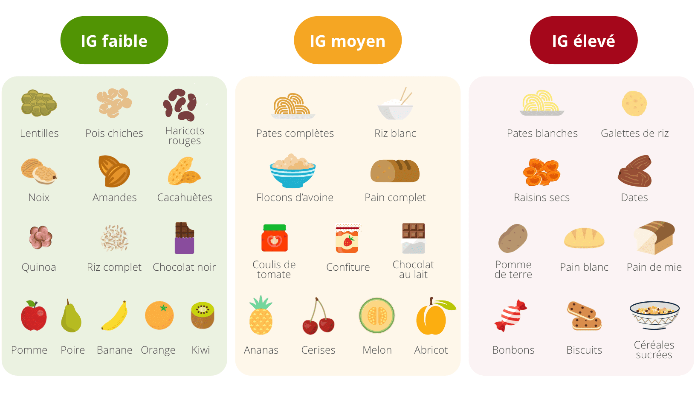
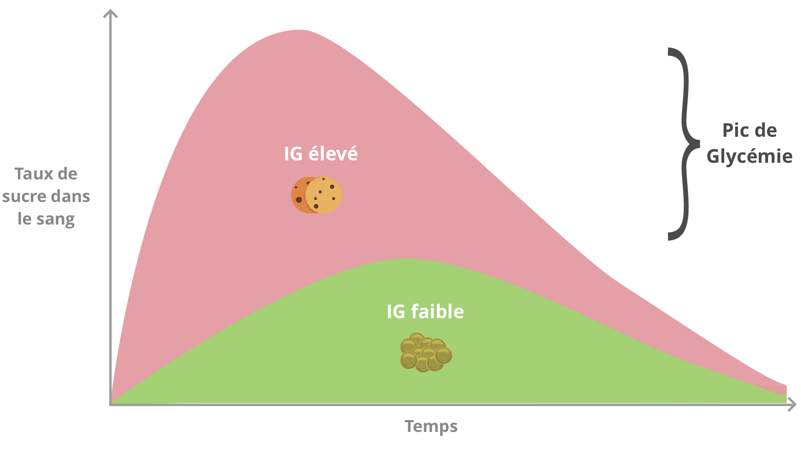

Les glucides sont plus communément appelés sucres. Ils servent de “carburant” : leur rôle principal est d’apporter de l’énergie aux cellules de l’organisme, c’est-à-dire des calories.
Glucides simples et glucides complexes
Les glucides sont généralement classés en deux groupes :
- Les glucides simples, qui sont constitués de petites molécules. Ils ont généralement une saveur sucrée et on les retrouve dans le sucre de table, le miel, les fruits, ou encore les biscuits et friandises où du sucre est souvent ajouté en quantité. Le lactose (ou sucre du lait) présent dans les produits laitiers fait également partie des glucides dits simples.
- Les glucides complexes, qui sont constitués de molécules plus grosses et plus complexes. Ils ont une saveur non sucrée et on les trouve essentiellement sous forme d’amidon et de fibres dans le pain, les pâtes, les pommes de terre, les céréales (riz, blé, quinoa, maïs, etc.) et les légumineuses (lentilles, pois chiches, fèves).
À quoi sert l’index glycémique ?
On entend souvent dire que les glucides simples sont des sucres rapides, et les glucides complexes des sucres lents. Ce n’est malheureusement pas si simple ! C’est justement la notion d’index glycémique qui va permettre de savoir si un sucre est dit “lent” ou “rapide”.
L’index glycémique permet de comparer la capacité des aliments à augmenter le taux de sucre dans le sang (glucose). Il indique à quelle vitesse le glucose d’un aliment se retrouve dans notre sang. Plus l’index glycémique de l’aliment est élevé, plus le taux de sucre dans le sang va augmenter rapidement après absorption de l’aliment.
En cas d’apport important de glucides, le pancréas va sécréter de l’insuline pour réguler le taux de sucre dans le sang. Plus l’index glycémique d’un aliment est élevé, plus la sécrétion d’insuline est importante. L’insuline va alors transformer et stocker le glucose sous forme de glycogène, pour être utilisé plus tard comme source d’énergie.
Mais, notre capacité à stocker du glycogène est limitée : si le stock de glycogène est saturé, l’insuline va alors transformer l’excès de glucose en … graisses !

Quel est l’index glycémique des aliments?
Voici quelques repères pour vous aider à identifier l’index glycémique des différent aliments. De manière générale, les glucides simples ont un index glycémique moyen à élevé et font monter rapidement la glycémie. Pour les glucides complexes, cela varie.
- Aliments à IG faible : légumineuses (lentilles, petits pois, haricots rouges, etc.), oléagineux (noix, amandes, cacahuètes), certains fruits (pomme, poire, banane, orange, kiwi, raisin), certaines céréales (pain intégral, boulgour, riz complet, muesli naturel), chocolat noir
- Aliments à IG moyen : pâtes complètes, certains fruits (ananas, cerises, melon), riz blanc, pain complet, chocolat au lait, confiture
- Aliments à IG élevé : pommes de terre, pain blanc, pain de mie, pâtes bien cuites, galettes de riz, confiseries, fruits secs (dattes, abricots secs, raisins secs, etc.), miel

Différents facteurs peuvent impacter l’index glycémique des aliments :
- La cuisson : plus un aliment est cuit, plus son IG augmente. L’IG des pâtes al dente est donc plus faible que celui des pâtes bien cuites. Quant à la pomme de terre, son IG est de 65 lorsqu’elle est cuite à la vapeur, mais grimpe à 95 lorsqu’elle est cuite au four.
- La présence de fibres : les fibres réduisent l’index glycémique d’un aliment. Ainsi, le riz complet ou le pain complet auront un index glycémique plus faible que le riz blanc et le pain blanc car ils sont plus riches en fibres (voir notre article sur les fibres). De la même manière, un fruit aura un index glycémique plus faible qu’un jus de fruits, qui a été dépourvu de fibres.
- Le degré de transformation : plus l’aliment subit des transformations, plus son IG est élevé. Les flocons d’avoine ont par exemple un IG de 59 tandis que les céréales soufflées, dont les grains cuits et portés sous haute pression ont un IG de 82. De la même manière, les légumes cuits et mixés dans une soupe auront donc un IG plus élevé que les légumes crus.
- L’association des aliments entre eux : la présence de lipides et de protéines dans les repas réduit la vitesse d’absorption des glucides et donc l’index glycémique du repas.
Notre alimentation est trop riche en glucides
Biscuits, pain blanc, pâtes, riz, biscottes, etc : nous consommons aujourd’hui beaucoup trop de glucides, et en particulier de glucides à index glycémique élevé. Cela a plusieurs conséquences problématiques :
- Prise de poids
Comme nous l’avons vu plus haut, les capacités de mise en réserve du glucose sous forme de glycogène sont limitées. Lorsque le stock est saturé, l’insuline va alors transformer et stocker l’excès de glucose sous forme de graisses.
Ainsi, une consommation trop importante d’aliments à index glycémique élevé favorise la prise de poids, voire l’obésité.
- Stress et fatigue
Consommer des aliments à index glycémique élevé provoque des pics de glycémie : le taux de sucre dans le sang augmente très rapidement et très fortement.
L’organisme va alors sécréter une quantité importante d’insuline afin de faire retomber la glycémie. Le niveau de sucre dans le sang va ainsi chuter rapidement, créant un “pic”.

Cette baisse brutale va tout d’abord générer une sensation de fatigue. C’est ce qui explique souvent le “coup de barre” après un repas où l’on a consommé une quantité importante de glucides rapides. De manière répétée, ces pics de glycémie favorisent la fatigue chronique et la baisse de vigilance au quotidien.
Par ailleurs, la fluctuation régulière de la glycémie au cours de la journée favorise aussi le stress, un trouble de plus en plus fréquent ces dernières années.
- Hausse de la résistance à l’insuline et du risque de diabète
Une consommation trop importante de glucides contribue à développer une résistance à l’insuline à long terme. Lorsqu’elles sont trop sollicitées par l’insuline, nos cellules finissent par développer une certaine forme de résistance et cessent parfois de répondre à l’insuline comme elles sont censées le faire.
En parallèle, les cellules du pancréas, fatiguées par la production massive d’insuline, vont produire de moins en moins d’insuline.
Ces dysfonctionnements liés à l’hormone de l’insuline sont la cause principale du diabète de type 2, maladie qui touche aujourd’hui près de 4% de la population française (sans compter les presque 500 000 personnes qui s’ignorent). Ils contribuent aussi à la hausse des risques cardiovasculaires et de maladies inflammatoires chroniques.
En pratique
- Privilégiez les glucides à index glycémique bas. Pour cela, favorisez la consommation de produits bruts ou peu transformés comme les céréales complètes (ou semi-complètes) et les légumineuses (lentilles, pois chiches, fèves, etc.)
- Consommez des fruits entiers plutôt que des jus de fruit
- Faites le plein de fibres à chaque repas (voir notre article sur les fibres)
- Optez pour du pain complet au levain (voir notre article sur le pain)
- Consommez des protéines au petit-déjeuner (voir notre article sur le petit-déjeuner)
- Atkinson FS, Foster-Powell K, Brand-Miller JC. International tables of glycemic index and glycemic load values: 2008. Diabetes Care. 2008;31(12):2281–2283. doi:10.2337/dc08-1239
- Adedayo BC, Adebayo AA, Nwanna EE, Oboh G. Effect of cooking on glycemic index, antioxidant activities, α-amylase, and α-glucosidase inhibitory properties of two rice varieties. Food Sci Nutr. 2018;6(8):2301–2307. Published 2018 Oct 11. doi:10.1002/fsn3.806
- Wolever TM. Effect of macronutrients on the glycemic index. Am J Clin Nutr. 2017;106(2):704–705. doi:10.3945/ajcn.117.158055
- Breymeyer KL, Lampe JW, McGregor BA, Neuhouser ML. Subjective mood and energy levels of healthy weight and overweight/obese healthy adults on high-and low-glycemic load experimental diets. Appetite. 2016;107:253–259. doi:10.1016/j.appet.2016.08.008
- Cui H, Yang Y, Bian L, He M. [Effect of food composition of mixed food on glycemic index]. Wei Sheng Yan Jiu. 1999 Nov;28(6):356-8. Chinese. PubMed PMID: 12016989.
- Haghighatdoost F, Azadbakht L, Keshteli AH, Feinle-Bisset C, Daghaghzadeh H, Afshar H, Feizi A, Esmaillzadeh A, Adibi P. Glycemic index, glycemic load, and common psychological disorders. Am J Clin Nutr. 2016 Jan;103(1):201-9. doi: 10.3945/ajcn.114.105445. Epub 2015 Nov 25. PubMed PMID: 26607943.
- Radulian G, Rusu E, Dragomir A, Posea M. Metabolic effects of low glycaemic index diets. Nutr J. 2009;8:5. Published 2009 Jan 29. doi:10.1186/1475-2891-8-5
- Brand-Miller JC, Holt SH, Pawlak DB, McMillan J. Glycemic index and obesity. Am J Clin Nutr. 2002 Jul;76(1):281S-5S. Review. PubMed PMID: 12081852.
- Rouhani MH, Kelishadi R, Hashemipour M, Esmaillzadeh A, Azadbakht L. The effect of low glycemic index diet on body weight status and blood pressure in overweight adolescent girls: a randomized clinical trial. Nutr Res Pract. 2013;7(5):385–392. doi:10.4162/nrp.2013.7.5.385
- Zafar MI, Mills KE, Zheng J, Peng MM, Ye X, Chen LL. Low glycaemic index diets as an intervention for obesity: a systematic review and meta-analysis. Obes Rev. 2019 Feb;20(2):290-315. doi: 10.1111/obr.12791. Epub 2018 Nov 20. PubMed PMID: 30460737.
- Bell SJ, Sears B. Low-glycemic-load diets: impact on obesity and chronic diseases. Crit Rev Food Sci Nutr. 2003;43(4):357-77. Review. PubMed PMID: 12940416.
- Vega-López S, Venn BJ, Slavin JL. Relevance of the Glycemic Index and Glycemic Load for Body Weight, Diabetes, and Cardiovascular Disease. Nutrients. 2018;10(10):1361. Published 2018 Sep 22. doi:10.3390/nu10101361
- Vega-López S, Mayol-Kreiser SN. Use of the glycemic index for weight loss and glycemic control: a review of recent evidence. Curr Diab Rep. 2009 Oct;9(5):379-88. Review. PubMed PMID: 19793508.
- https://www.ameli.fr/assure/sante/themes/diabete-comprendre/definition
- Eleazu CO. The concept of low glycemic index and glycemic load foods as panacea for type 2 diabetes mellitus; prospects, challenges and solutions. Afr Health Sci. 2016;16(2):468–479. doi:10.4314/ahs.v16i2.15
- Sacks FM, Carey VJ, Anderson CA, et al. Effects of high vs low glycemic index of dietary carbohydrate on cardiovascular disease risk factors and insulin sensitivity: the OmniCarb randomized clinical trial. JAMA. 2014;312(23):2531–2541. doi:10.1001/jama.2014.16658
- Willett W, Manson J, Liu S. Glycemic index, glycemic load, and risk of type 2 diabetes. Am J Clin Nutr. 2002 Jul;76(1):274S-80S. Review. PubMed PMID: 12081851.
- Bhupathiraju SN, Tobias DK, Malik VS, et al. Glycemic index, glycemic load, and risk of type 2 diabetes: results from 3 large US cohorts and an updated meta-analysis. Am J Clin Nutr. 2014;100(1):218–232. doi:10.3945/ajcn.113.079533
- Ojo O, Ojo OO, Adebowale F, Wang XH. The Effect of Dietary Glycaemic Index on Glycaemia in Patients with Type 2 Diabetes: A Systematic Review and Meta-Analysis of Randomized Controlled Trials. Nutrients. 2018;10(3):373. Published 2018 Mar 19. doi:10.3390/nu10030373